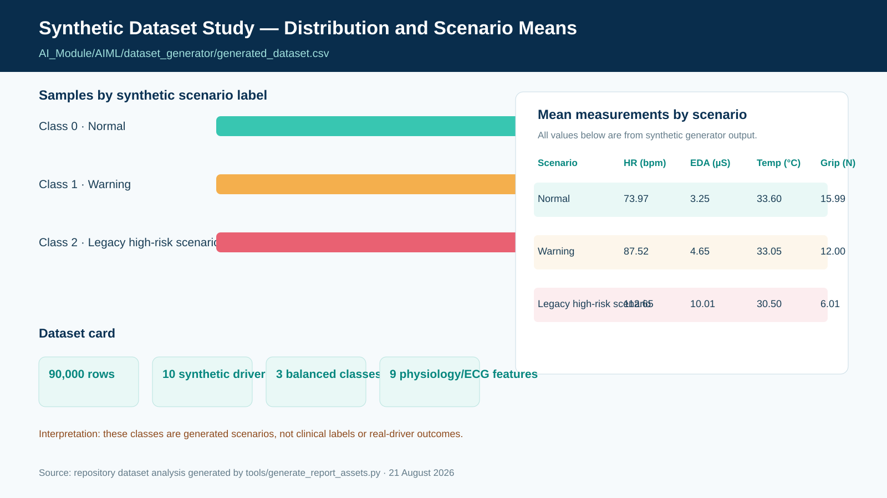
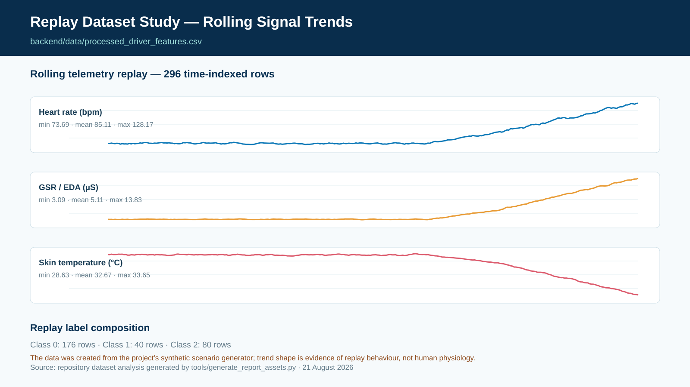
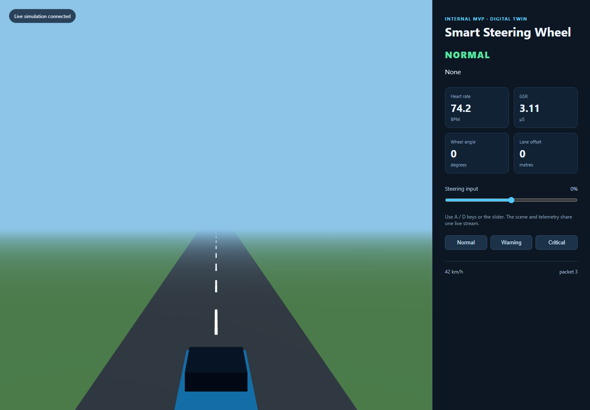

CHATake INNOWORKS PRIVATE LIMITED
M IN D F O R G E A I D I V I S I O N
CERTIFICATE OF PROJECT COMPLETION
This is to certify that Ananya Shirshi, Swara Anakaram, Laxmi Shankari and Aashna Shaikh, students of T.E. Diploma in Computer Science and Engineering, have prepared the internship project entitled “Smart Steering Wheel: Personalised Multimodal Driver-Safety Risk Platform” under the AIML internship programme of the MindForgeAI Division, Chatake Innoworks Private Limited.
The work was carried out under the guidance of Mr. Akash Chatake, M.Tech — Artificial Intelligence and Machine Learning, BITS Pilani, R&D, Chatake Innoworks Private Limited. The report records the project’s implemented prototype, repository-derived evidence, dataset study, digital-twin demonstration, and planned research extensions.
| Item | Details |
|---|---|
| Project title | Smart Steering Wheel: Personalised Multimodal Driver-Safety Risk Platform |
| Organisation | Chatake Innoworks Private Limited |
| Programme | MindForgeAI Internship · internship project submission |
| Portal reference | mindforgeai.co.in (as supplied by the project team) |
| Guide | Mr. Akash Chatake · M.Tech — Artificial Intelligence and Machine Learning, BITS Pilani · R&D, Chatake Innoworks Private Limited · cakash@chatakeinnoworks.com |
| Team | Ananya Shirshi — T.E. Diploma CSE — ananyashirashi@gmail.com Swara Anakaram — T.E. Diploma CSE — swaranakaran@gmail.com Laxmi Shankari — T.E. Diploma CSE — shankarilaxmi8@gmail.com Aashna Shaikh — T.E. Diploma CSE — aashnashaikh23@gmail.com |
| Version | 1.0 · prepared 21 August 2026 |
The analysis in this chapter is reproducible from the repository. The figures were generated from AI_Module/AIML/dataset_generator/generated_dataset.csv and backend/data/processed_driver_features.csv using tools/generate_report_assets.py. Both are synthetic/project-generated datasets and must not be presented as clinical or on-road data.
| Dataset | Rows × columns | Evidence / use | Interpretation boundary |
|---|---|---|---|
| Synthetic generator dataset | 90,000 × 12 | 10 synthetic driver IDs; 9 physiology/ECG features; 30,000 rows in each class (0/1/2). | Training/prototype scenario evidence only. |
| Processed replay dataset | 296 × 6 | 5-sample rolling HR mean/std, GSR mean, temperature mean, label and timestamp. | Demonstrates replay path, not human monitoring. |
| Root generated dataset | 270,000 × 12 | Present at repository root. | Excluded from analysis: its ranges are implausible for the stated feature units and it needs provenance/data-quality investigation. |
For the selected 90,000-row synthetic dataset, each label has 30,000 rows. Therefore:
This balance helps a prototype classifier avoid trivial majority-class accuracy. It does not prove class realism because the labels are produced by predefined scenario ranges in the generator.

Figure 1. Actual summary computed from the repository’s 90,000-row synthetic generator dataset. The source code labels class 2 using a medical-sounding legacy term; this report treats it only as a synthetic high-risk scenario class.
The existing preprocessing script specifies a five-sample rolling window. For a signal x, the rolling mean and population standard deviation at time t are:
In the current code, these calculations produce HR rolling mean, HR rolling standard deviation (a variability proxy), GSR rolling mean, and temperature rolling mean. The following figure uses all 296 rows of the processed replay file.

Figure 2. Actual rolling-signal values from the replay file. The graph is an implementation/replay check, not a physiological study of participants.
The future context-aware model should estimate expected personal physiology x̂t and use a residual rt = xt − x̂t. A generic fusion representation is:
where pt,h is a calibrated risk estimate at horizon h ∈ {0, 5, 10, 15 minutes}. This is a planned research formulation; it is not yet implemented or evaluated in the repository.
Smart Steering Wheel is a driver-safety decision-support project that connects steering-wheel physiological telemetry, a live software dashboard, risk inference, and a digital-twin demonstrator. Its intended research direction is to predict safety risk relative to each driver’s context and personal baseline—not to interpret any single sensor reading as a medical diagnosis.
The repository already provides a practical prototype base: FastAPI services, a React/Vite dashboard, synthetic telemetry generators, CSV replay, risk-inference code, a versioned initial telemetry contract, and a browser-based Three.js digital twin. The codebase also shows important gaps: multiple incompatible model paths, synthetic labels, no vision model, no real context/habit pipeline, and no driver-wise real-world evaluation.
| Threshold baseline | This project’s intended direction |
|---|---|
| Generic reference ranges for physiology | Personalised expectation and context-aware residuals |
| Current-state alert | Current risk plus planned 5/10/15-minute risk horizons |
| Limited sensor stream | Future fusion of vision, physiology, context and driving behaviour |
| Binary confidence assumptions | Signal quality, uncertainty, explanation and safe defer state |
Raised heart rate, sweating, grip changes, and temperature variation may arise from normal exercise recovery, traffic stress, cabin conditions, sensor contact artefacts, or a driver-safety concern. A dependable system must therefore reason over trend, context, quality and individual baseline rather than use a universal threshold as a diagnosis.
The central proposed model is:
The supplied reference paper, Development of a Real-Time Driver Health Detection System Using a Smart Steering Wheel [1], is a useful hardware and signal-processing baseline. It is cited as prior work only. This project neither claims that paper’s work nor presents its own prototype as a validated medical detector.
| Component | Verified repository evidence | Current role |
|---|---|---|
| Backend | `backend/app/` | FastAPI services, simulated/replayed driver status and API boundary. |
| Frontend | `Frontend/` | React/Vite pages for dashboard, vitals, analytics, history, setup and settings. |
| Replay data | `backend/data/processed_driver_features.csv` | Sequential replay of rolling HR, HRV proxy, GSR and temperature features; grip is presently fixed in one replay path. |
| AI module | `AI_Module/` | Synthetic data generators, model artefacts, preprocessing, predictor and simulator utilities. |
| Digital twin | `digital-twin/` | FastAPI/WebSocket/Three.js visual MVP with controllable steering and synthetic scenarios. |
| Contract | `digital-twin/contracts/driver_telemetry_v1.json` | Initial versioned `driver-twin.v1` schema for key telemetry fields. |
For an industry-quality implementation, every stage emits a time stamp, sequence number, source ID, quality state, and schema version. The replay/twin visualisation should consume precisely the same canonical event as the model audit log.
| Line | Evidence in repository | Inputs / output | Report status |
|---|---|---|---|
| KNN inference | `backend/app/services/predict_risk.py` | 9 physiology/ECG fields; Normal/Warning/Cardiac_Event legacy labels; 3-sample stabilisation. | Legacy prototype; feature contract mismatch identified. |
| Random Forest report | `AI_Module/AIML/Week3/model_evaluation_report.md` | 4 rolling features; 3 classes; historical 60-sample metrics. | Documentation only; source/run cannot be matched to a model artefact. |
| Calibrated XGBoost | `AI_Module/AIML/Week3/train_model.py` and `AI_Module/prediction/predictor.py` | 9 generated physiology features; binary risk probability plus hand-written rules. | Current strongest artefact path, but trained on synthetic data only. |
# Condensed from AI_Module/prediction/predictor.py features, metrics = preprocess_telemetry(telemetry_data) ml_prob = model.predict_proba(features)[0][1] * 100.0 rule_score, reasons = compute_rule_penalty(metrics) instant_risk = min(100.0, 0.50 * ml_prob + 0.50 * rule_score) persistent_risk = mean(scores in the previous 5 seconds) status = NORMAL / WARNING / CRITICAL based on persistent_risk
The excerpt documents current implementation logic. The rule names and clinical wording require refactoring to non-diagnostic driver-safety language before release.
The four-branch architecture above is the target research design; the current repository has not yet implemented its vision, context, driving-behaviour or temporal branches. The physics-guided layer is deliberately a soft constraint/consistency mechanism. It should improve plausibility and uncertainty handling, not hard-code medical rules.
| Output | Purpose | Safety condition |
|---|---|---|
| Current state | Normal / caution / high-risk / unknown decision-support state | Never a disease diagnosis. |
| Multi-horizon risk | Planned 5, 10 and 15-minute forecast probability | Requires time-aware labels and held-out evaluation. |
| Uncertainty and data quality | Shows whether sensing supports a decision | Return `UNKNOWN` or defer under poor contact/missing data. |
| Explanation | Human-readable modality and trend reasons | Use evidence codes, not medical assertions. |
The working browser twin is an integration demonstrator, not a vehicle physics or clinical model. It supports live WebSocket telemetry, steering input, and repeatable normal/warning/critical synthetic scenarios. The planned production path preserves the same canonical contract while moving sensor/vehicle integration into ROS 2 and CARLA.
| Scenario | Purpose | Pass condition |
|---|---|---|
| Physiological replay | Confirm consistent dashboard and twin rendering. | Recorded and displayed timeline agree. |
| Sensor fault injection | Test noise, stale time, contact loss, implausible values and disconnects. | Data degraded/unknown state; no unsupported alert. |
| Driver-risk sequence | Exercise temporal persistence and graded alert policy. | Deterministic expected alert record. |
| Vehicle-event correlation | Associate synthetic lane/collision events with health timeline. | Scenario is replayable with timestamps and metadata. |
| Hardware-in-loop calibration | Measure real device cadence, jitter, loss and latency. | Measured limits documented; simulator-only control maintained. |

Figure 3. Actual screenshot of the runnable `digital-twin` browser MVP captured from the local FastAPI/WebSocket service on 21 August 2026. It shows the Normal synthetic scenario, live telemetry cards, steering control, and vehicle scene. It is not evidence of an on-road or medical system.
Random frame splits and randomly divided rolling windows can leak driver/trip information into test data. Evaluation must be driver-wise and time-aware. For a new driver, a population model should be tested first; any personal baseline/adaptation period must be earlier in time and excluded from final test scoring.
| Experiment | Why it matters | Required reporting |
|---|---|---|
| Vision-only baseline | Establish conventional drowsiness baseline. | Driver-wise F1, AUROC/AUPRC, calibration. |
| Physiology/context-only | Quantify value of context and personal baseline. | False alerts/hour, uncertainty coverage. |
| Fusion without constraints | Measure pure learned fusion. | Horizon-specific results and ablation. |
| Full recovery-aware fusion | Test central proposed contribution. | Lead time, ECE/Brier score, subgroup analysis. |
| Fault/missing-modality tests | Demonstrate robust defer behaviour. | Performance and abstention by fault type. |
| Phase | Deliverable | Exit criterion |
|---|---|---|
| 1. Stabilise | One model/schema contract, reproducible environment, unified REST/WebSocket prediction. | Feature-order, contract and replay tests pass. |
| 2. Instrument | Event/receive timestamps, sequence, source, quality, model and calibration versioning. | Each alert is auditable from packet to UI. |
| 3. Verify twin | Deterministic scenarios, fault injection, latency evidence and replay UI. | Expected events match recorded scenario runs. |
| 4. Integrate | ROS 2/CARLA adapter retaining canonical contract. | Wheel/replay data reaches vehicle/twin/API reliably. |
| 5. Research extension | Approved study, data governance, multimodal temporal models, personalisation. | Driver-wise, calibrated, reproducible evidence. |
| Category | MVP target | Controls |
|---|---|---|
| Telemetry | 20 Hz simulated; 30 Hz wheel target | Sequence, staleness and jitter monitoring. |
| Dashboard | Local-network p95 under 500 ms | Timestamped latency measurement. |
| Wheel-to-simulator | Simulator-only p95 under 100 ms target | HIL measurement and no road actuation. |
| Security/privacy | Development environment only by default | TLS, RBAC, encryption, consent and retention controls for human data. |
| Hazard / concern | Required control |
|---|---|
| Sensor contact loss or missing modality | Quality score and explicit `UNKNOWN`/defer output; do not invent a confident health-risk state. |
| False or excessive alerts | Persistence window, calibration, quiet period, acknowledgement and logged review. |
| Invalid model feature ordering | Schema/version checks at model load and inference; automated feature-order tests. |
| Driver mismatch/model drift | Calibration state, uncertainty escalation, performance monitoring and governed retraining. |
| Physiological/video privacy | Institutional approval as appropriate, explicit consent, minimisation, pseudonymisation, encryption and retention/deletion rules. |
| Vehicle-control misunderstanding | Keep all command paths simulator-only in this project; retain human override and separate any future safety architecture. |
This project is prepared as an internship deliverable under Chatake Innoworks Private Limited’s MindForgeAI internship environment [2, 3]. The team acknowledges the guidance and R&D support provided by Chatake Innoworks Private Limited.
| Role | Name and contact |
|---|---|
| Team member | Ananya Shirshi · T.E. Diploma CSE · ananyashirashi@gmail.com |
| Team member | Swara Anakaram · T.E. Diploma CSE · swaranakaran@gmail.com |
| Team member | Laxmi Shankari · T.E. Diploma CSE · shankarilaxmi8@gmail.com |
| Team member | Aashna Shaikh · T.E. Diploma CSE · aashnashaikh23@gmail.com |
| Project guide | Mr. Akash Chatake · M.Tech — Artificial Intelligence and Machine Learning, BITS Pilani · R&D, Chatake Innoworks Private Limited · cakash@chatakeinnoworks.com |